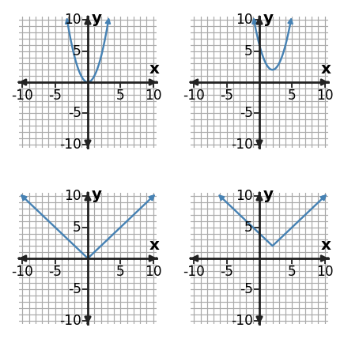

Transformations Across Function Families
Function Analysis, Modeling, and Synthesis
Use structure, representations, and context as evidence—not decoration.
Learning Target
Students will analyze transformations across multiple function families.
- I can build transformed function rules from parent functions across linear, quadratic, exponential, and absolute value families.
- I can use key points and key features to graph transformations across multiple function families.
- I can formulate a transformation description that connects parameter changes to key point shifts across function families.
Vocabulary / Key Notation Preview
parent function · parameter · translation · reflection · stretch/compression
Sort the vocabulary. Write each vocabulary word in the column that best matches what you know right now. You may move a word later.
| Know for sure | Recognize | Don't know yet |
|---|---|---|
What's to Come
DO NOT SOLVE IT YET.
Circle anything familiar, underline symbols, labels, conditions, data, or features that seem important, and write short notes about what you think may matter later.
A parent-function display and transformed-function display are shown. For two different families, track a key point or key feature from parent to image, describe what moved or scaled, and predict how the same transformation notation would affect a third family.

Let's Get Started
Skim the section. Record what catches your attention before you read closely.
| What I noticed | |
|---|---|
| What I predict | |
| What I wonder |
READ IN SHORT CHUNKS.
Annotate the words and visuals together. Underline evidence, circle or highlight bold vocabulary, label arrows, measurements, or important features, connect sentences to figures, and jot short questions or connections in the margins.
I can build transformed function rules from parent functions across linear, quadratic, exponential, and absolute value families.
A parent function is a basic family model that gives us a reference shape and a set of useful anchor points. Transformations change the position, orientation, or scale of that graph without changing its underlying family. This makes a parent function a shortcut: instead of rebuilding a graph from scratch, we can describe how the parent is moved.
A useful common form is $g(x)=a f(x-h)+k$. The horizontal translation comes from $x-h$ inside the function and moves points right by $h$; this is why the sign inside looks opposite the direction of motion. The outside $+k$ moves every output up by $k$. The multiplier $a$ changes vertical distances from the transformed baseline: $|a|\gt 1$ stretches, $0\lt |a|\lt 1$ compresses, and a negative $a$ creates a vertical reflection.
The same transformation notation works across linear, quadratic, exponential, and absolute value families, but the feature you watch may change. A quadratic or absolute-value vertex moves, an exponential horizontal asymptote moves vertically, and every point on any parent graph follows the transformation. The rule is consistent even when the family-specific features are different.
- In $g(x)=f(x-3)+2$, which direction does the graph move horizontally and vertically?
- Why does the sign of a horizontal shift appear opposite the direction of motion?
- What stays the same when a quadratic parent is translated?
For $g(x)=a f(x-h)+k$:
| Parameter | Graph effect |
|---|---|
| $h$ | horizontal shift right $h$ (left when $h\lt0$) |
| $k$ | vertical shift up $k$ |
| $a$ | vertical stretch/compression by $|a|$; reflect across the $x$-axis if $a\lt0$ |
A parent point $(x,y)$ becomes $(x+h, ay+k)$.
Example 1: Build a Shifted Rule
Start with $f(x)=x^2$. Write the rule for a graph shifted 1 unit(s) left and 2 unit(s) down.
You Try It 1: Build a Shifted Rule
Start with $f(x)=x^2$. Write the rule for a graph shifted 2 unit(s) left and 5 unit(s) up.
Example 2: Transform Key Points
For the transformation $g(x)=-f(x+2)$, use parent key points $(-1,1)$, $(0,0)$, and $(1,1)$ to list the transformed points.
You Try It 2: Transform Key Points
For the transformation $g(x)=2f(x+2)$, use the parent key points to complete/interpret the transformed points.
| parent $x$ | parent $y$ | new $x$ | new $y$ |
|---|---|---|---|
| -1 | 1 | -3 | 2 |
| 0 | 0 | -2 | 0 |
| 1 | 1 | -1 | 2 |
I can use key points and key features to graph transformations across multiple function families.
Graphing transformations is most efficient when you track key features rather than plotting many unrelated points. The useful anchors depend on the family. For $y=x^2$ and $y=|x|$, the vertex is a natural anchor. For an exponential parent, the y-intercept and horizontal asymptote are useful. For a line, any two reliable points plus its slope behavior can anchor the image.
A transformation must act on the entire graph. If one key point shifts left 4 and up 2, every other point must follow the same coordinate rule. This is an important error check: moving only the vertex while leaving the arms of an absolute-value graph unchanged does not create a valid translation. Likewise, a vertical scale changes every y-distance in a consistent way.
Key features also carry meaning. A translated vertex may represent a new minimum or maximum, and a shifted asymptote changes the long-run baseline of an exponential model. When a problem gives an equation, translate the parameters into feature movement; when it gives a graph, reverse the reasoning by comparing corresponding features.
- Why is a vertex often more useful than a random point when transforming a quadratic or absolute-value graph?
- If a rule translates one point left 2, what must happen to every other point’s x-coordinate?
- Which feature of a basic exponential graph is especially useful for detecting a vertical shift?
| Family | Useful key features |
|---|---|
| Linear | two points, intercepts, slope direction |
| Quadratic | vertex, axis of symmetry, opening |
| Exponential | y-intercept, horizontal asymptote, growth/decay direction |
| Absolute value | vertex, two rays, left/right rates |
Example 3: Read Horizontal and Vertical Shifts
Describe the horizontal and vertical translation from $f(x)=|x|$ to $g(x)=|x+4|+2$.
You Try It 3: Read Horizontal and Vertical Shifts
Describe the horizontal and vertical translation from $f(x)=|x|$ to $g(x)=|x-1|-2$.
Example 4: Combine Shifts and Scaling
Compare $g(x)=3|x+2|+4$ with $f(x)=|x|$. Describe the reflection/stretch/compression and translations.
You Try It 4: Combine Shifts and Scaling
Compare $g(x)=2^{x-1}+3$ with its parent function. Describe the reflection/stretch/compression and translations that are visible.
I can formulate a transformation description that connects parameter changes to key point shifts across function families.
A complete transformation description connects parameters to visible movement. Saying “the graph changed” is not enough. A precise description names direction and amount of each translation, any vertical stretch or compression, and any reflection. This language should match both the equation and the movement of key points.
Order matters most when you are interpreting a symbolic rule. In $g(x)=a f(x-h)+k$, the input is first matched to the shifted parent location, then the parent output is scaled by $a$, and finally shifted vertically by $k$. For point mapping, this becomes $(x,y)\to(x+h, ay+k)$. That one coordinate rule gives a consistent way to test a verbal description.
Across function families, the words remain consistent even though the picture differs. “Right 2 and down 1” moves the quadratic vertex, the absolute-value vertex, and every point of an exponential curve by the same coordinate amounts. A strong description therefore uses key features as evidence but describes the transformation itself in family-independent language.
- What information is missing from the statement “the graph shifted”?
- How does a negative outside multiplier affect a graph?
- Why can the same phrase “right 2 and down 1” be used for different function families?
right $h$
up $k$
vertical scale by $|a|$
reflect across the $x$-axis
Check the words by mapping at least one key point.
Example 5: Write a Vertical Shift
Write a transformed rule for $f(x)=4^x$ shifted 3 unit(s) down.
You Try It 5: Write a Vertical Shift
Write a transformed rule for $f(x)=2^x$ shifted 3 unit(s) up.
Example 6: Describe a Transformation from Graphs
Compare the parent graph on the left with the transformed graph on the right. Describe the transformation using key features, not just overall appearance.

You Try It 6: Describe a Transformation from Graphs
Compare the parent graph on the left with the transformed graph on the right. Describe the transformation using key features, not just overall appearance.

Summary
- Use parent functions as reference models and apply a common transformation rule across families.
- Track efficient key points and features, then move every point consistently.
- Describe transformations precisely using direction, amount, vertical scale/compression, and reflection.
Common Mistakes
| Mistake | Better move |
|---|---|
| Reading horizontal signs literally | $f(x-h)$ moves right $h$; the inside sign appears opposite the direction. |
| Moving only one feature | Every point must follow the transformation, not just the vertex or intercept. |
| Using vague transformation language | Name the amount, direction, and any stretch/compression or reflection. |